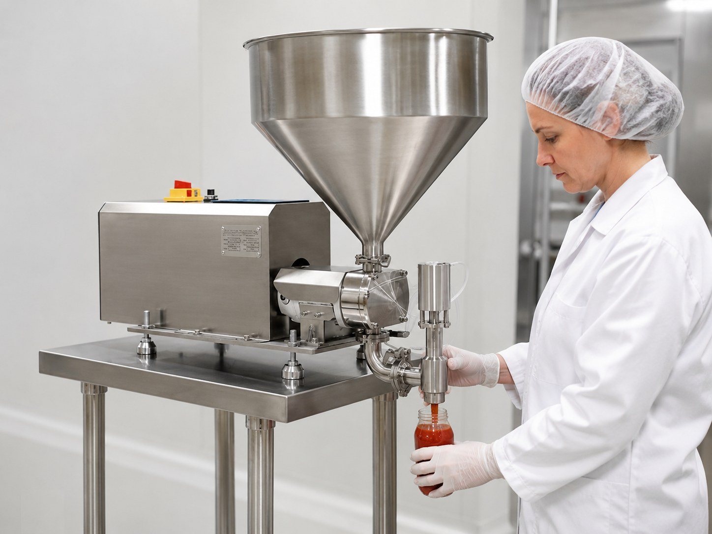
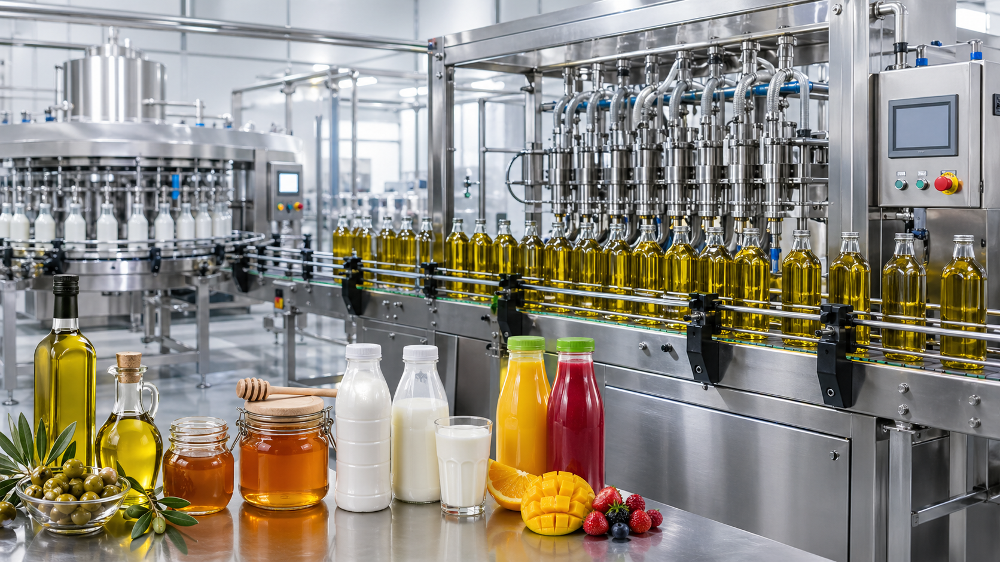
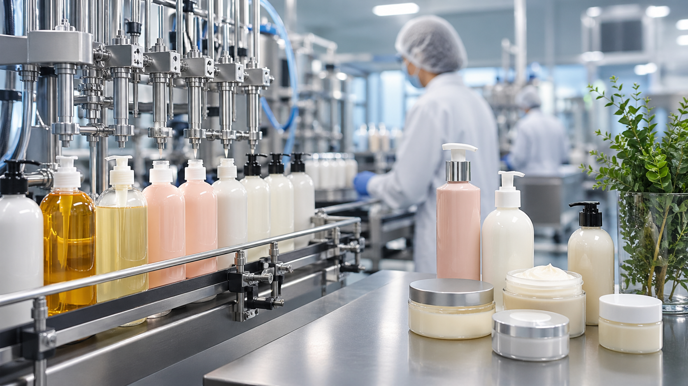
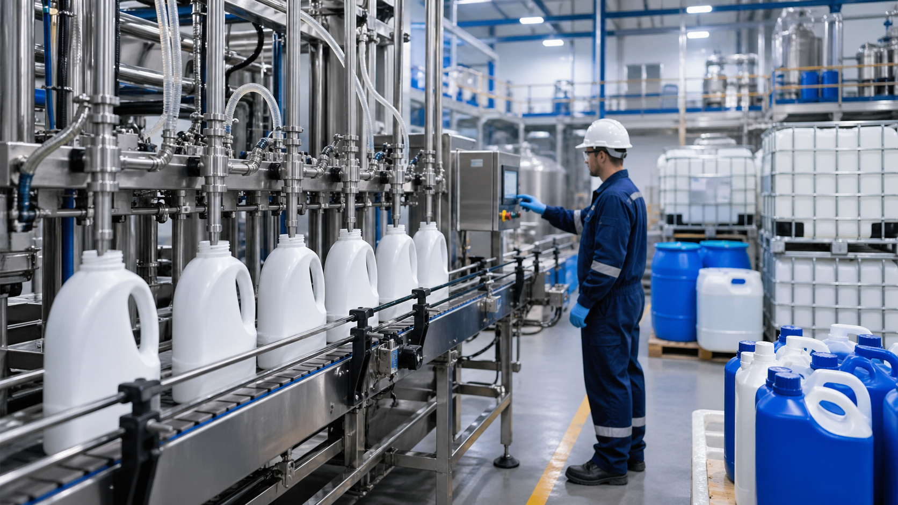
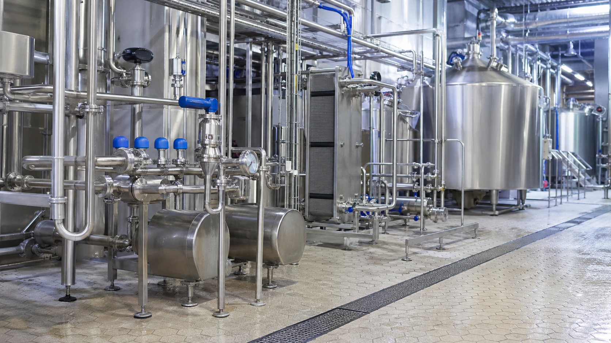

Pascal Flow
Lob pompalı dolum makinesi ve hijyenik pompa çözümleri
Gıda, kozmetik, kimya ve hijyenik proseslerde hassas dolum, güvenli ürün transferi ve üretime uygun mühendislik çözümleri sunuyoruz.

Gıda, kozmetik, kimya ve hijyenik proseslerde hassas dolum, güvenli ürün transferi ve üretime uygun mühendislik çözümleri sunuyoruz.

Lob pompa teknolojisi, 5 ml – 5.000 L dolum aralığı ve PLC ekran üzerinden kolay ayar imkânı ile bal, zeytinyağı, sos, ayran ve viskoz ürünlerde tekrarlanabilir dolum sağlar.

Paslanmaz gövde, kolay temizlenebilir tasarım ve proses hattına uygun akış performansı ile hijyenik üretim hatları için güvenilir pompa çözümü.

Dolum yapılacak ürün, gramaj, viskozite, ambalaj tipi ve kapasite bilgilerine göre doğru makine ve pompa seçimi yapılır.
5 ml – 5.000 L dolum aralığı, PLC ekran kontrol sistemi ve 316 paslanmaz ürün temas yüzeyi ile gıda, kozmetik ve kimya uygulamaları için çözüm.
Süt, ayran, meyve suyu, CIP hattı ve düşük viskoziteli ürün transferlerinde verimli ve kolay temizlenebilir pompa çözümü.
Dört ana sektör için dolum, transfer ve hijyenik proses uygulamalarını tek alanda inceleyebilirsiniz.

Gıda üretim tesislerinde hassas dolum ve hijyenik akışkan transferi için lob pompa ve santrifüj pompa çözümleri sunuyoruz.

Viskozitesi değişen kozmetik ürünlerde kontrollü, temiz ve tekrarlanabilir dolum için uygun makine çözümleri sağlıyoruz.

Kimyasal akışkanlarda ürün yapısına göre uygun malzeme, conta, pompa tipi ve dolum hassasiyeti birlikte değerlendirilir.

Paslanmaz yapı, temizlenebilir yüzeyler ve proses güvenliği gereken uygulamalar için uygun ekipman seçimi yapıyoruz.
Pascal Flow, dolum yapılacak ürünün yapısını, ambalaj tipini, hedef kapasiteyi ve temizlik beklentisini birlikte değerlendirerek çözüm önerir.
Dolum miktarının tekrarlanabilir olması için ürün yapısına uygun pompa, nozul ve kontrol sistemi seçilir.
Gıda ve hijyenik proseslerde 316 paslanmaz ürün temas yüzeyi, kolay temizlik ve güvenli ürün akışı hedeflenir.
Viskozite, sıcaklık, dolum hacmi, kapasite ve hat bağlantıları değerlendirilerek doğru konfigürasyon belirlenir.
Ürün seçimi yapmadan önce pompa tipi, dolum hassasiyeti, malzeme ve kontrol sistemi gibi konuları inceleyebilirsiniz.
Lob pompalı dolum makinesi, akışkan ve yarı akışkan ürünleri kontrollü şekilde doldurmak için kullanılan volumetrik dolum çözümüdür.
Yazıyı OkuBal gibi yoğun ürünlerde pompa tipi, nozul yapısı, ısıtma ihtiyacı ve dolum hassasiyeti birlikte değerlendirilmelidir.
Yazıyı OkuDolum makinesinde geri besleme seçimi ürün, hassasiyet, kapasite ve ambalaj tipine göre yapılmalıdır.
Yazıyı OkuPLC ekranlı dolum makineleri reçete, hız ve dolum miktarı ayarlarını operatör için pratik hale getirir.
Yazıyı OkuGıda temas yüzeylerinde paslanmaz malzeme seçimi hijyen, temizlik ve proses güvenliği açısından kritiktir.
Yazıyı OkuViskoz ürünlerde dolum hızı, hassasiyet, slip ve ürün yapısı pompa seçimini etkiler.
Yazıyı OkuSos dolumunda nozul çapı, ürün içindeki partikül ve damlama kontrolü dolum kalitesini doğrudan etkiler.
Yazıyı OkuTekli ve çoklu dolum sistemleri kapasite, bütçe, ürün değişim sıklığı ve hat düzenine göre değerlendirilir.
Yazıyı OkuHijyenik santrifüj pompalar düşük viskoziteli sıvıların temiz ve verimli şekilde transfer edilmesi için kullanılır.
Yazıyı OkuDolum makinesi fiyatı; pompa tipi, kontrol sistemi, malzeme, geri besleme ve uygulama şartlarına göre değişir.
Yazıyı OkuBal, sos, reçel, krem, şampuan ve hijyenik transfer uygulamaları için ayrı teknik sayfalar oluşturuldu.
Bal, yüksek viskoziteli ve sıcaklığa duyarlı bir ürün olduğu için kontrollü pompa, uygun nozul ve doğru sıcaklık yönetimi gerektirir.
Detayları GörZeytinyağı gibi akışkan ürünlerde temiz dolum, tekrarlanabilir hacim ve ambalaja uygun nozul seçimi önemlidir.
Detayları GörSos dolumunda viskozite, partikül içeriği, nozul çapı ve damlama kontrolü birlikte değerlendirilmelidir.
Detayları GörReçel dolumunda meyve parçası, viskozite ve sıcaklık dolum performansını doğrudan etkiler.
Detayları GörKrem dolumunda yoğunluk, hava alma, nozul kapanması ve gramaj hassasiyeti kritik seçim kriterleridir.
Detayları GörŞampuan dolumunda köpürme, viskozite değişimi ve nozul kapanma karakteri dikkate alınmalıdır.
Detayları GörÜrün adı, dolum miktarı, saatlik kapasite, viskozite ve ambalaj bilgilerini paylaşarak hızlı teknik dönüş alabilirsiniz.